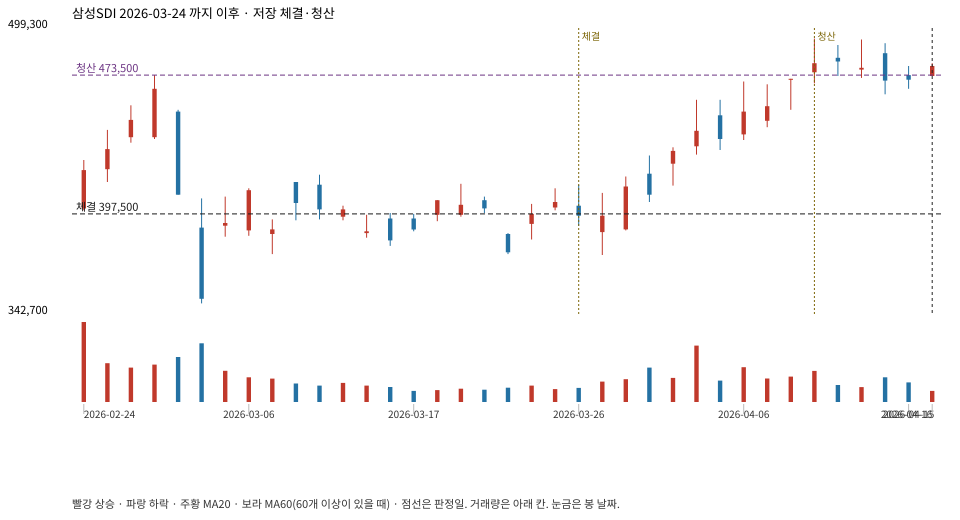

계좌를 다시 돌리지 않았다. 아래는 저장된 주문·체결·청산·비용·손익이다.

{
"case_id": "9e4a875e2f0b1911",
"status": "closed",
"trade": {
"symbol": "006400.KS",
"signal_date": "2026-03-24",
"quantity": 37,
"entry": 397500,
"stop": 370957,
"target": 473500,
"planned_risk": 1017379.7507954974,
"reserved_cash": 14722207.499999998,
"fill": {
"date": "2026-03-26",
"price": 397500,
"fee": 14707.5
},
"exit": {
"date": "2026-04-09",
"price": 473500,
"reason": "target",
"net_pnl": 2779773.000000002,
"ambiguous_bar": false
}
},
"cost": "research fee 10bp each side, slippage 5bp; amounts below are the stored ledger, not a new run",
"chart": "c\/9e4a875e2f0b1911.svg"
}